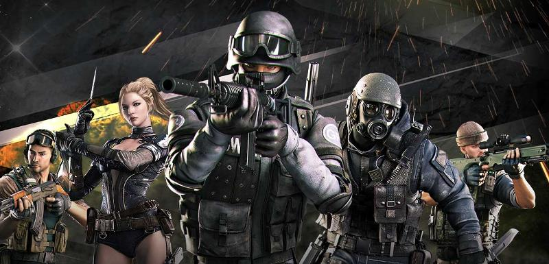
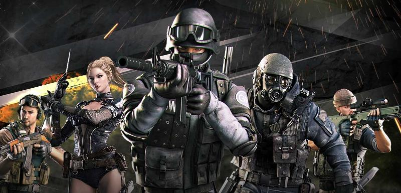

| Modes | Description |
| Team Deathmatch | Teams work towards goals, such as first to x many kills, or the team with the most kills. |
| Search & Destroy | Black List's objective is to plant and detonate a C4 charge in a designated spot or kill all of the Global Risk players. Global Risk's objective is to eliminate all Black List players or prevent Black List from planting and detonating the charge within the match's time limit. Players do not respawn. Rounds last up to 3 minutes. |
| Free for All | No teams, teams kill as many players as possible. Players respawn at different locations. The round ends when a player reaches the kill quota for the match or the timer runs out. Weapon restrictions exist for this mode. |
| Elimination | Similar to TDM, except players do not respawn when killed. In some maps, players start only with their melee weapons and must pick up guns pre-set in the map. Rounds last up to three minutes, with Global Risk defaulting in wins. |
| Suppression Mode | A new, and much faster Search and Destroy. Each Black List player gets a bomb, and spawns only a few metres from the bomb plant site. The Global Risk must storm their defenses and disarm the bomb before it detonates. |
| Ghost Mode | All Black List mercenaries have invisibility and melee weapons, while all Global Risk mercenaries are fully visible, but can use all available weapons. Black List emits a heavy breathing sound, footsteps, splashes while running through water, and also become significantly visible while moving. |
| Shadow Mode | A variant of Ghost Mode. A player becomes a Shadow warrior which is an advanced ghost character. This mode introduces security devices such as Sensors, Lasers and Sprinklers to track down the Shadow warriors. In this map, there are certain parts of the floors which are covered with different textures (including broken glass) that will make more noise than others, making it easier for the Mercenary Soldiers to hear the Shadow Warrior movements. |
| Mutation Mode | One or two players are infected and mutated 20 seconds into the round. When the time is up or all mutants are dead, the soldiers win. If all the soldiers mutate or die, the mutants win. Mutants are knocked backwards when shot. They can revive when killed but not by kinfe. |
| Escape Mode | A game mode where the Black List team must "escape" through a portal a certain number of times while the Global Risk team tries to prevent them. There are walls and doors that can be destroyed to make the escaping team's job easier or are a requirement to escape, at half time the teams switch sides (if the team finishes escaping early, then they immediately switch sides. If they do not complete their goal, then the other team only has to finish what the other team started). |
| Hero Mode | The game plays mostly like Mutation mode, but features a "Hero" character. 20 seconds into the round, one to three players randomly will mutate and one will become the "Hero". Also, mutants here will continue to respawn when killed unless they are killed with a headshot. The game ends when either the soldiers survive until the round ends or they are all mutated. |
| Hero Mode X | Random players are mutated after 20 seconds count down, and one of them is chosen to be the "Terminator" which has 6000 HP and can infect players with longer ranged lightning bolt attacks, making it a rather daunting foe for soldiers. Mutants can only be prevented from respawning by being killed with a melee attack rather than a headshot. The premise of this mode is that once only 2-3 players are left, they can have a chance to turn into Commandos, which cannot be infected like regular soldiers and possess dual kukris, which do massive damage to mutants and prevent them from respawning altogether, however Commandos cannot using firearms. The round ends either with all players infected/killed or if all the mutants are killed and cannot respawn. Also in this mode, it features a damage boost for soldiers, which deals much more damage to mutants and increases every time a soldier is infected. Soldiers can have a maximum of 340% damage boost, to the point of becoming Commandos themselves. This mode also features two expansion packs, one with a new Terminator-like mutant called Havoc, which is same equivalent as Terminator but has slashing attacks instead of electricity attacks and a Commando counterpart called Nemesis, a female commando armed with dual axes. The other expansion is called the Parasite Expansion, an upgraded add-on where the mutants side features a Devil Terminator mutant armed with long blades and a parasite bomb, and for the soldier's side features a new Commando called Devil Hunter armed with Twin Assassin Swords and can regain 200 HP for every mutants killed. In this add-on, the Devil Terminator can infect soldiers using its parasite bomb from a distance and the soldiers will have to shoot each other, if they were hit by the parasite bomb to prevent getting infected and curing the player or their teammates will have the player's primary weapon's ammo restocked. |
| Zombie Mode | Four players in a Zombie Apocalypse-esque scenario. Zombie Apocalypse consists of a team of four Global Risk mercenaries trying to survive a fixed number of rounds with a boss at the final round. The enemies featured in the game are a variety of "zombified" Black List mercenaries and mutants, each kind having their own characteristic. The game ends once the players survive through the rounds and kill the final boss in the map or if all the players are killed and cannot respawn. |
| Elite/Bounty Mode | This mode is the first with given money and battle results, similar to the concept of Counter Strike. When the battle begins, players can only use the pistol equipped in their inventory and must buy other weapons using their cash. Cash can be gained by killing opponents or planting/defusing the bomb. This mode is like S&D Pro. |
| Wave Mode | 5v5 or 4v4 team based mode. Both teams must destroy the opposition's defense towers in order to reach the base, which has two "Last defense towers" guarding it, and players must destroy those two towers to start damaging the base (clearance of all side towers is not needed). This is the first mode where the player can pick one of eleven classes before joining the room. Each class is different and has its own skills. This mode also introduces NPCs, airstrikes, mortar bombs, energy transmitters and Class Upgrade Systems. |
| King Mode | No teams. Players compete in a series of mini-games each round, and the players with the highest score gets selected as a commander each round. The game continues until a player reaches a certain score and fight to be crowned the King. |
| Sheep Mode | No teams. Players compete to get the most points in the end by picking up sheep, which generate points every so often. Once someone has gotten to a point limit set before the game, the golden sheep is spawned, and everyone must fight to see who will get it. |
| Big Head | Team death match but with a twist, as the player kills they level up, increasing their head size. The maximum is five. A bar will fill up for each team and when it is full, that team will enter "Big Head" mode, where the player is able to instant kill anyone with a melee attack. |
 
